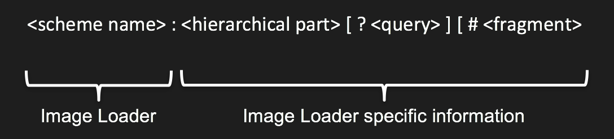

Image Ids
A Cornerstone Image Id is a URL which identifies a single image for cornerstone to display.
The URL scheme in the Image Id is used by Cornerstone to determine which Image Loader plugin to call to actually load the image. This strategy allows Cornerstone to simultaneously display multiple images obtained with different protocols from different servers. For example, Cornerstone could display a DICOM CT image obtained via WADO alongside a JPEG dermatology image captured by a digital camera and stored on a file system.
The Image Id format

Cornerstone does not specify what the contents of the URL are - it is up to the Image Loader to define the contents and format of the URL so that it can locate the image. For example, a proprietary Image Loader plugin could be written to talk to a proprietary server and lookup images using a GUID, filename or database row id.
Here are some examples of what an Image Id could look like for different Image Loader plugins:
- example://1
- dicomweb://server/wado/{uid}/{uid}/{uid}
- http://server/image.jpeg
- custom://server/uuid